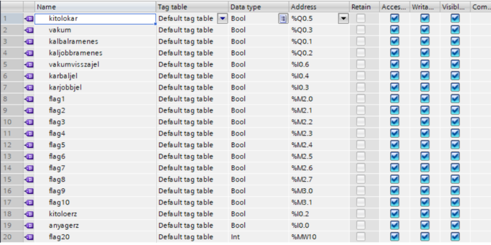
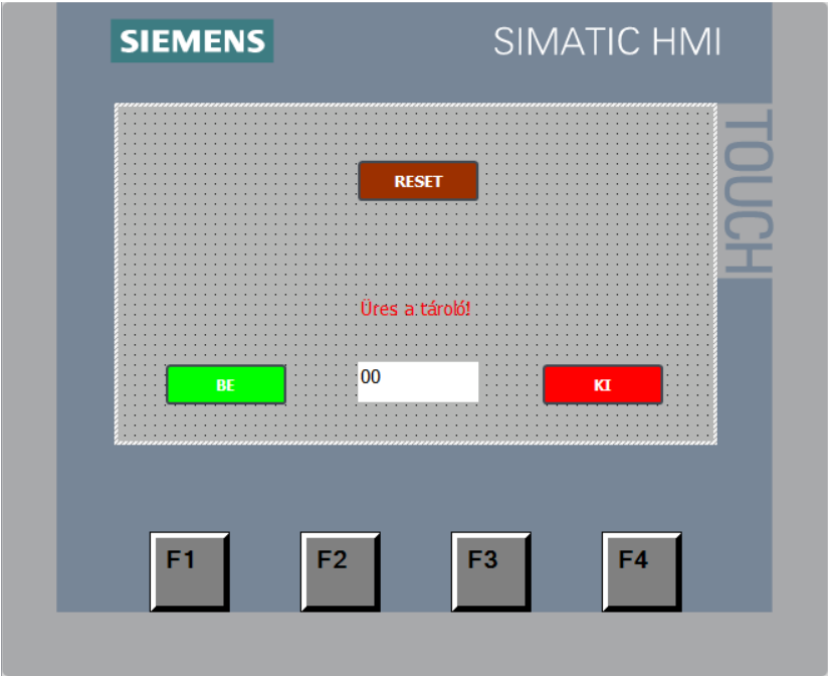
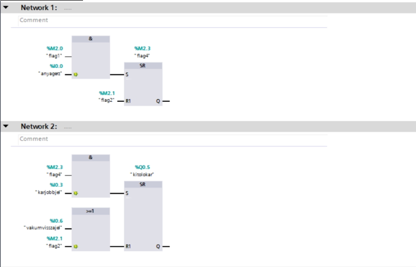
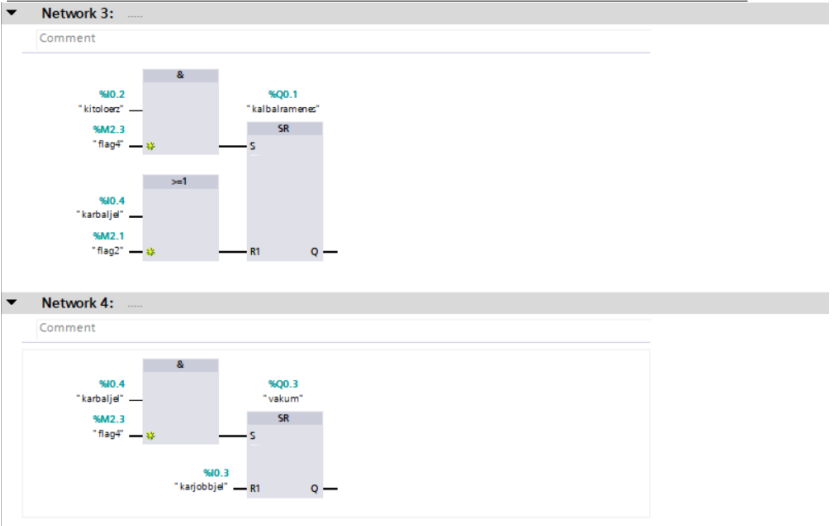
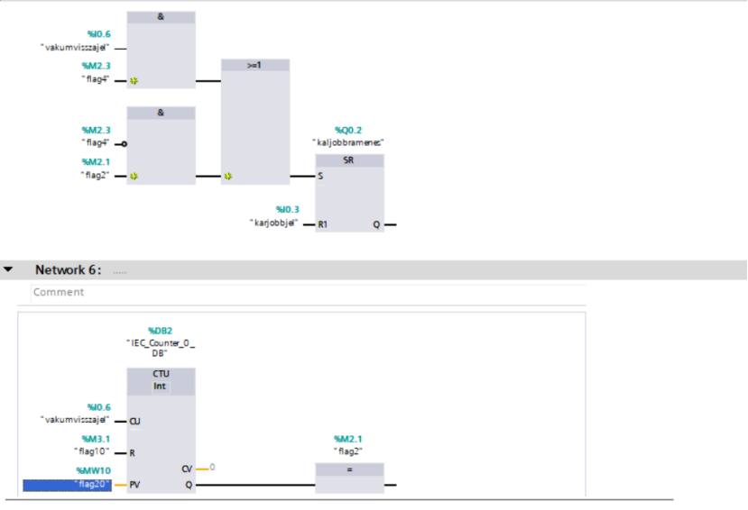
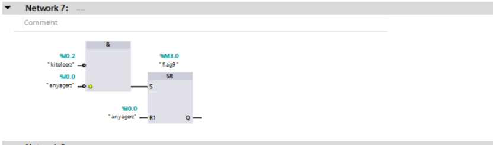

Projekt #2 - Automatikus átrakodás
Projektfeladat leírása
A berendezés működése során egy pneumatikus kar kitolja a korongot a toronytárolóból, majd egy vákuumos megfogóval ellátott forgókar áthelyezi azt a kijelölt pozícióba. A rendszer biztosítja, hogy csak akkor induljon vissza a kar, ha a vákuumszenzor visszajelzése alapján a megfelelő szívóhatás létrejött. A működés teljes egészében a HMI felületéről vezérelhető , ahol a felhasználó a rendszer indítását és leállítását vezérelheti, valamint megadhatja a kitárazandó korongok számát. Amennyiben kifogynak a korongok, abban az esetben a kijelzőn jelzi a rendszer a kezelőnek, hogy nincs korong, illetve a program sem indul el.
A projektben használt hardveres eszközök
● PLC (Programozható Logikai Egység) – Siemens Simatic S7-1200 ●
● HMI Panel – Siemens Simatic HMI ●
● Switch – Siemens Scalance XB005 ●
● HP ProBook 650 G8 Notebook ●
● Pneumatikus munkahengerek – a korongok kitolására és a kar mozgatására ●
● Festo vákuumgenerátor és vákuumszenzor ●
● Pozíció érzékelők ●
● Tápegység (24VDC) ●
● Kompresszor a sűrített levegő ellátáshoz ●
Konklúzió és Önreflexió
A projekt során felépítettem egy rendszert, ami egy oszloptárolóból automatikusan átpakolja a korongokat a kijelölt pontra, és jelzi a kezelőnek ha üres a tároló. A rendszer HMI-n keresztül vezérelt, TIA V17-ben készített program. A projekt során sikerült egy logikusan felépített, ipari szemléletű vezérlőrendszert kialakítanom. A munka közben azonban jelentős nehézséggel szembesültem, mivel egy ponton teljesen újra kellett kezdenem a programozást. A rendszer működése nem volt megfelelő, és nem tudtam pontosan beazonosítani a hiba okát, ami valószínűleg a nem kellően átgondolt programstruktúrából adódott. Ez kezdetben frusztráló volt, ugyanakkor rávilágított arra, mennyire fontos a vezérlési folyamat előzetes megtervezése. Az újrakezdés után már strukturáltabban, átláthatóbban építettem fel a programot, ami stabilabb működést eredményezett. A hibakeresés során sokat fejlődött a problémamegoldó képességem és a PLC programozási gyakorlatom. Összeségében a projekt nemcsak szakmai tudásomat mélyítette el, hanem kitartásra és precízebb munkavégzésre is tanított.
Képek és Videók





